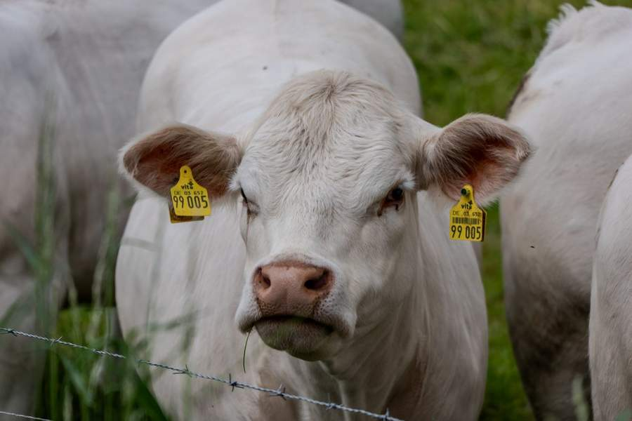
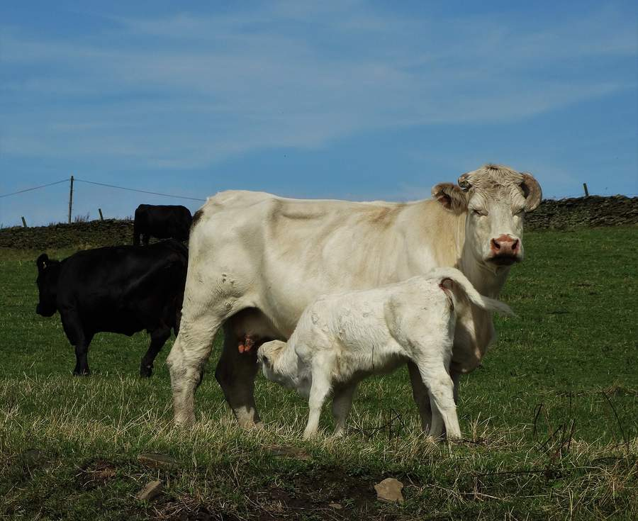

Introduction
The Charolais from central France is one of the largest and fastest-growing beef breeds in the world — pure white or cream in colour.
Charolais sires are used on other breeds everywhere to add growth and muscle. Their cross calves grow faster and heavier than almost any other cross.
Charolais at a Glance
| Origin | Charolles, central France |
|---|---|
| Type | Beef breed |
| Bull weight | 1,100–1,400 kg — among the heaviest beef breeds |
| Dressing percentage | 62–68% carcass yield |
| Coat | Pure white to cream, pink skin and muzzle |
| Price (indicative) | US $1,800–3,500 per breeding animal |
Characteristics

- Massive Muscling — Thick, heavily muscled body from shoulder to thigh.
- White-Cream Coat — Pure white to cream, with pink skin and muzzle.
- Long, Deep Frame — A long, deep body built to carry maximum beef.
- The Calf — Big-born calves that grow extremely fast.
Strengths
- Fastest growth of beef breeds
- Heavy, lean carcasses
- Excellent crossing sire
- Strong demand for calves
- Good feed conversion
Keep in Mind
Charolais calves are big at birth — do not use a Charolais bull on small cows or first-time heifers, as calving can be difficult.
Beef Production
Charolais dress out at 62–68% — a 650 kg steer gives roughly 400–440 kg of carcass, lean meat with less waste fat than most breeds.
Growth is the breed’s gift: Charolais and Charolais-cross calves reach heavy weights faster than almost any other beef cattle.
Price & Buying Tips
Typical price — international (indicative): US $1,800 – 3,500 — per breeding animal; pedigree bulls cost more. All prices are indicative and move with the market.
Prices vary by country, pedigree and meat-market demand. Pedigree Charolais bulls sell well above this range, and cross calves sell fast.
Before You Buy — Checklist
- Body frame & muscling
- Legs & hooves sound
- Breeding organs normal
- Teeth & age checked
- Body condition score 3+
- Vaccination & deworming record
- Temperament calm
- Weight on scale, not by eye
Photos of the Breed

Frequently Asked Questions
How heavy is a Charolais bull?
Mature bulls weigh about 1,100–1,400 kg — the Charolais is one of the largest and heaviest beef breeds in the world.
Why are Charolais used for crossing?
Their calves grow faster and heavier than almost any other cross, adding muscle and weight to commercial beef herds.
Do Charolais have calving problems?
Calves are large at birth, so the breed is best used on mature, roomy cows — not on small heifers.
What is the price of a Charolais animal?
About US $1,800–3,500 per breeding animal (indicative); pedigree bulls cost more.
Free Guide & Related Breeds
All 25 breeds — with bull, cow and calf photos, varieties, production charts and Urdu summaries — are in our free 196-page pictorial guide:
📖 Download the Free Cattle Breeds Guide (PDF)
Related breeds: Limousin · Belgian Blue · Aberdeen Angus
⚠️ Important: Breed figures on this page are typical published ranges, and prices are indicative only — they change with the market, the animal's age, records and pregnancy status. Always inspect an animal in person (or with your veterinarian) before buying.
✍️ Written by Dr. Shahid Bilal Depal, DVM (PVMC RVMP #15068)
This guide is for educational purposes. Consult a registered veterinarian for diagnosis and treatment.